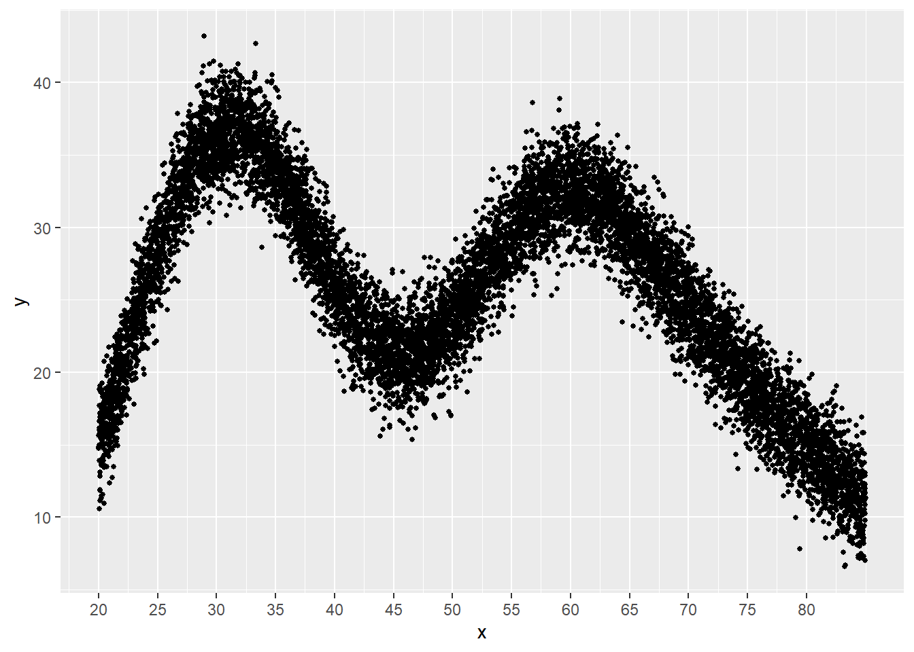
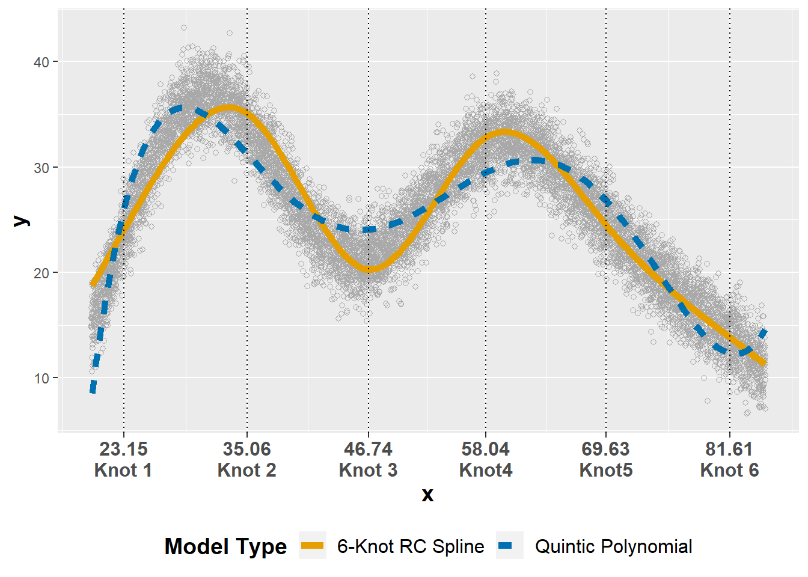
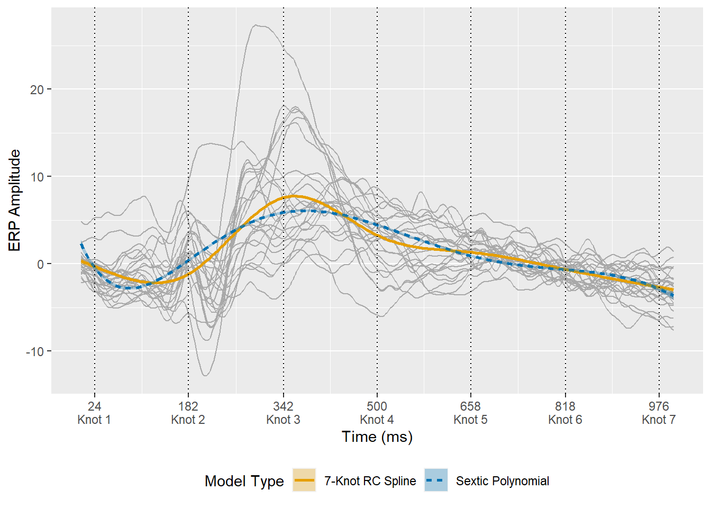

Using Restricted Cubic Splines in Structural Equation Models
Steven M. Brunwasser, Ph.D.
2022-11-17
knitr::opts_chunk$set(echo = TRUE,
warning = F,
message = F
)Workspace Prep
require( data.table )
require( ggplot2 )
require( mgcv )
require( rms )
require( Hmisc )
require( lavaan )
require( ERP )Demonstration in OLS regression
Prior to demonstrating the use of restricted cubic splines (RCSs) in structural equation models (SEM), we will use RCSs to model a nonlinear association in an ordinary least squares (OLS) model using the rms. There are several helpful overviews for this package, including this one and this one.
First, let’s simulate data with a nonlinear association that does not follow a simple polynomial function. Goldfield and Wujciak-Jens provide helpful code that to accomplish this. Please see their code and explanations for a detailed explanation of this approach.
x <- c(20, 30, 40, 50, 60, 70, 80)
y <- c(15, 40, 25, 22, 35, 24, 15)
dd <- data.table(x = x, y = y)
dc <- copy(dd)
dc[, xend := (shift(x, type = "lead"))]
dc[, yend := (shift(y, type = "lead"))]
dc <- dc[ -.N]
dc[, id := .I]
dc## x y xend yend id
## 1: 20 15 30 40 1
## 2: 30 40 40 25 2
## 3: 40 25 50 22 3
## 4: 50 22 60 35 4
## 5: 60 35 70 24 5
## 6: 70 24 80 15 6interp_line <- function(x, y, xend, yend) {
slope <- (yend - y)/(xend - x)
b <- y - slope*x
newx <- seq(x, xend, length = 100)
newy <- newx*slope + b
data.table::data.table(x = newx, y = newy)
}
dx <- dc[, interp_line(x, y, xend, yend), keyby = id]
dx## id x y
## 1: 1 20.00000 15.00000
## 2: 1 20.10101 15.25253
## 3: 1 20.20202 15.50505
## 4: 1 20.30303 15.75758
## 5: 1 20.40404 16.01010
## ---
## 596: 6 79.59596 15.36364
## 597: 6 79.69697 15.27273
## 598: 6 79.79798 15.18182
## 599: 6 79.89899 15.09091
## 600: 6 80.00000 15.00000gam.fit <- gam(y ~ s(x, k = 7), data = dx)
dx[, ypred := predict(gam.fit)]
set.seed(123)
mdata <- data.table(x = runif(10000, 20, 85))
mdata$y <- predict(gam.fit, newdata = mdata) + rnorm(nrow(mdata),0, 2)
ggplot(data = mdata, aes(x = x, y = y)) +
geom_point(size = 1) +
scale_x_continuous( breaks = seq( 20, 80, 5 ) )
dd <- datadist( mdata )
options( datadist = 'dd' )
ols.rcs5 <- ols( y ~ rcs( x, 6 ),
data = mdata,
x = T,
y = T )
print( ols.rcs5 )## Linear Regression Model
##
## ols(formula = y ~ rcs(x, 6), data = mdata, x = T, y = T)
##
## Model Likelihood Discrimination
## Ratio Test Indexes
## Obs 10000 LR chi2 21723.01 R2 0.886
## sigma2.3470 d.f. 5 R2 adj 0.886
## d.f. 9994 Pr(> chi2) 0.0000 g 7.489
##
## Residuals
##
## Min 1Q Median 3Q Max
## -8.40068 -1.58746 0.01796 1.60307 10.24834
##
##
## Coef S.E. t Pr(>|t|)
## Intercept -16.0106 0.3258 -49.14 <0.0001
## x 1.7298 0.0118 146.56 <0.0001
## x' -19.3577 0.1079 -179.47 <0.0001
## x'' 63.8037 0.3429 186.10 <0.0001
## x''' -89.2816 0.4995 -178.74 <0.0001
## x'''' 67.1363 0.5032 133.43 <0.0001
## anova( ols.rcs5 )## Analysis of Variance Response: y
##
## Factor d.f. Partial SS MS F P
## x 5 428209.95 85641.99026 15547.58 <.0001
## Nonlinear 4 310437.00 77609.25011 14089.31 <.0001
## REGRESSION 5 428209.95 85641.99026 15547.58 <.0001
## ERROR 9994 55050.75 5.50838ols.pol5 <- ols( y ~ pol( x, 5 ),
data = mdata,
x = T,
y = T )
print( ols.pol5 )## Linear Regression Model
##
## ols(formula = y ~ pol(x, 5), data = mdata, x = T, y = T)
##
## Model Likelihood Discrimination
## Ratio Test Indexes
## Obs 10000 LR chi2 18302.93 R2 0.840
## sigma2.7847 d.f. 5 R2 adj 0.840
## d.f. 9994 Pr(> chi2) 0.0000 g 7.030
##
## Residuals
##
## Min 1Q Median 3Q Max
## -9.31954 -1.95530 -0.04622 1.93245 10.31625
##
##
## Coef S.E. t Pr(>|t|)
## Intercept -742.2532 5.1911 -142.99 <0.0001
## x 86.5221 0.5953 145.35 <0.0001
## x^2 -3.6529 0.0259 -141.24 <0.0001
## x^3 0.0730 0.0005 136.49 <0.0001
## x^4 -0.0007 0.0000 -131.32 <0.0001
## x^5 0.0000 0.0000 125.74 <0.0001
## anova( ols.pol5, tol=1e-15 )## Analysis of Variance Response: y
##
## Factor d.f. Partial SS MS F P
## x 5 405761.83 81152.36624 10465.14 <.0001
## Nonlinear 4 287988.88 71997.21998 9284.53 <.0001
## REGRESSION 5 405761.83 81152.36624 10465.14 <.0001
## ERROR 9994 77498.87 7.75454ols.rcs5.pred <- Predict( ols.rcs5, x )
ols.pol5.pred <- Predict( ols.pol5, x )
ols5.pred <- rbind( ols.rcs5.pred, ols.pol5.pred )
ols5.pred$model <- rep( c( '6-Knot RC Spline','Quintic Polynomial' ), each = 200 )
cbbPalette <- c("#E69F00","#0072B2" , "#56B4E9", "#009E73", "#F0E442", "#D55E00", "#CC79A7")
ols.pred5.plot <- ggplot( ) +
geom_point( data=mdata, aes( x=x, y=y ), color = 'darkgray', shape = 1 ) +
geom_line( data=ols5.pred, aes( x=x, y=yhat, group = model, colour=model, linetype = model ), size = 2 ) +
scale_color_manual( values=cbbPalette ) +
geom_vline( xintercept = rcspline.eval( mdata$x, nk = 6, knots.only = T ), linetype = 3 ) +
scale_x_continuous( breaks = rcspline.eval( mdata$x, nk = 6, knots.only = T ),
labels = c('23.15\nKnot 1','35.06\nKnot 2','46.74\nKnot 3','58.04\nKnot4','69.63\nKnot5','81.61\nKnot 6')) +
labs( colour='Model Type',
linetype ='Model Type') +
theme( axis.text.x = element_text( size = 12, face = 'bold'),
legend.title = element_text( size = 14, face = 'bold'),
legend.text = element_text( size = 12 ),
axis.title = element_text( size = 14, face = 'bold'),
legend.position = 'bottom' )
ols.pred5.plot
GLS Model with ERP Data
data(impulsivity)
dim(impulsivity)## [1] 144 505impulsivity1 <- subset( impulsivity, !duplicated( impulsivity$Subject ) )
imp <- reshape( impulsivity1,
direction = 'long',
timevar = 'time',
varying = list( out = colnames( impulsivity )[5:505] ),
idvar = 'Subject',
times = seq( 0, 1000, 2 )
)ddimp <- datadist( imp )
options( datadist = ddimp )
# imp.rcs7 <- Gls( T_0 ~ rcs( time, 8 ),
# correlation = corAR1( form = ~time | Subject ),
# data = imp,
# x = T )
# save( imp.rcs7, file='imp.rcs7.RData' )
load( 'imp.rcs7.RData' )
# imp.rcs6 <- Gls( T_0 ~ rcs( time, 7 ),
# correlation = corAR1( form = ~time | Subject ),
# data = imp,
# x = T )
# save( imp.rcs6, file='imp.rcs6.RData' )
load( 'imp.rcs6.RData' )
# imp.rcs5 <- Gls( T_0 ~ rcs( time, 6 ),
# correlation = corAR1( form = ~time | Subject ),
# data = imp,
# x = T )
#
# save( imp.rcs5, file='imp.rcs5.RData' )
load( 'imp.rcs5.RData' )
imp.rcs7.aic <- AIC( imp.rcs7 )
imp.rcs6.aic <- AIC( imp.rcs6 )
imp.rcs5.aic <- AIC( imp.rcs5 )
data.frame( AIC = c(imp.rcs7.aic, imp.rcs6.aic, imp.rcs5.aic ),
DF = c( 7, 6, 5 ) )## AIC DF
## 1 64298.24 7
## 2 64146.42 6
## 3 64810.86 5print( imp.rcs6 )## Generalized Least Squares Fit by REML
##
## Gls(model = T_0 ~ rcs(time, 7), data = imp, correlation = corAR1(form = ~time |
## Subject), x = T)
##
##
## Obs12024 Log-restricted-likelihood-32064.21
## Clusters24 Model d.f. 6
## g 3.455 sigma 3.4750
## d.f. 12017
##
## Coef S.E. t Pr(>|t|)
## Intercept 0.3276 0.1491 2.20 0.0281
## time -0.0273 0.0015 -18.45 <0.0001
## time' 0.8024 0.0189 42.50 <0.0001
## time'' -2.6273 0.0569 -46.15 <0.0001
## time''' 3.2949 0.0787 41.85 <0.0001
## time'''' -2.0047 0.0824 -24.33 <0.0001
## time''''' 0.6655 0.0787 8.45 <0.0001
##
## Correlation Structure: ARMA(1,0)
## Formula: ~time | Subject
## Parameter estimate(s):
## Phi1
## 0
## anova( imp.rcs6 )## Wald Statistics Response: T_0
##
## Factor Chi-Square d.f. P
## time 9533.83 6 <.0001
## Nonlinear 8999.03 5 <.0001
## TOTAL 9533.83 6 <.0001# imp.pol6 <- Gls( T_0 ~ pol( time, 6 ),
# correlation = corAR1( form = ~time | Subject ),
# data = imp,
# x = T )
# save( imp.pol6, file='imp.pol6.RData' )
load( 'imp.pol6.RData' )imp.rcs6.pred <- data.frame( Predict( imp.rcs6, time ) )
imp.rcs6.pred$model <- '7-Knot RC Spline'
imp.pol6.pred <- data.frame( Predict( imp.pol6, time ) )
imp.pol6.pred$model <- 'Sextic Polynomial'
imp6.pred <- rbind( imp.rcs6.pred, imp.pol6.pred )
imp6.pred$model <- factor( imp6.pred$model )
impplot <- ggplot( ) +
geom_line( data=imp, aes( x=time, y=T_0, group = Subject ), colour='darkgray' ) +
geom_line( data=imp6.pred, aes( time, yhat, group = model, colour = model, linetype=model ), size=1 ) +
geom_ribbon( data=imp6.pred, aes( x=time, ymin=lower, ymax=upper, fill=model ), alpha = .3 ) +
geom_vline( xintercept = rcspline.eval( imp$time, nk = 7, knots.only = T ), linetype = 3 ) +
scale_color_manual( values=cbbPalette) +
scale_fill_manual( values=cbbPalette) +
scale_x_continuous( breaks = rcspline.eval( imp$time, nk = 7, knots.only = T ),
labels = c('24\nKnot 1','182\nKnot 2','342\nKnot 3','500\nKnot 4','658\nKnot 5','818\nKnot 6','976\nKnot 7')) +
labs( y='ERP Amplitude', x='Time (ms)', colour = 'Model Type', fill = 'Model Type', linetype = 'Model Type') +
theme( legend.position = 'bottom' )
impplot
Latent Growth Curve Model: Perceived Stress Trajectories
load( 'cts.splines.Rdata' )
html( describe( cts.splines ) )5 Variables 656 Observations
id: Unique participant identifier

| n | missing | distinct |
|---|---|---|
| 656 | 0 | 82 |
psstot: Composite Perceived Stress Score

| n | missing | distinct | Info | Mean | Gmd | .05 | .10 | .25 | .50 | .75 | .90 | .95 |
|---|---|---|---|---|---|---|---|---|---|---|---|---|
| 607 | 49 | 42 | 0.998 | 22.5 | 8.82 | 10 | 12 | 17 | 23 | 28 | 32 | 35 |
sex: Participant-Reported Sex
| n | missing | distinct |
|---|---|---|
| 656 | 0 | 2 |
Value Female Male Frequency 376 280 Proportion 0.573 0.427
dasct: Compsite Dysfunctional Attitudes Score (mean centered)

n missing distinct Info Mean Gmd .05 .10
648 8 61 0.999 1.368e-14 31.62 -37.528 -30.528
.25 .50 .75 .90 .95
-19.528 -2.528 15.472 38.472 54.472
| lowest : | -66.52843 | -52.52843 | -50.52843 | -38.52843 | -37.52843 |
| highest: | 42.47157 | 54.47157 | 62.47157 | 73.47157 | 86.47157 |
weeks: Week of Follow-up (0=Baseline)

| n | missing | distinct | Info | Mean | Gmd |
|---|---|---|---|---|---|
| 656 | 0 | 8 | 0.984 | 6.875 | 5.039 |
Value 0 2 4 6 8 10 12 13 Frequency 82 82 82 82 82 82 82 82 Proportion 0.125 0.125 0.125 0.125 0.125 0.125 0.125 0.125
Create a wide version of the CTS data for latent growth modeling.
cts.wide <- reshape( cts.splines,
direction = 'wide',
v.names = 'psstot',
timevar = 'weeks',
idvar = 'id',
sep = ''
)We do not want to make the assumption that the time-invariant dysfunctional attitudes variable (dasct) affects stress trajectories in a linear manner; rather, we would like to at least allow for possible non-linearity. We’ll model the effect of dasct with a 3-knot restricted cubic spline allowing the knots to be placed at their default values (outer knots placed at the 0.10 and 0.90 quantiles of dasct). There is no equivalent to the rcs() function provided in the rms package in the lavaan package. Consequently, we need to create \(k-1\) time variables (where \(k\) is the number of knots) to include in the cts.wide data frame in order to estimate the nonlinear effect. We use the rcspline.eval() function (rms package) to create new nonlinear time variable (dasct.nonlinear) needed to estimate a 3-knot restricted cubic spline effect of dysfunctional attitudes on stress trajectories, then creating a new data frame (cts.wide1) that merges this new nonlinear variable with the cts.wide data frame. We can then estimate the 3-knot restricted cubic spline effect by including both the dasct and the dasct.nonlinear variables as predictors in the model, representing the linear and nonlinear effects, respectively.
das.spline <- data.frame( rcspline.eval( cts.wide$dasct, nk = 3 ) )
colnames( das.spline ) <- c( 'dasct.nonlinear' )
cts.wide1 <- cbind( cts.wide, das.spline )
head( cts.wide1 )## id sex dasct psstot0 psstot2 psstot4 psstot6 psstot8 psstot10
## 1 1074614 Female -10.528432 26 43 23 20 23 29
## 9 1765339 Male -50.528432 8 15 15 16 6 32
## 17 2882872 Female 23.471568 33 26 25 20 27 18
## 25 4269441 Female -27.528432 15 24 29 26 26 30
## 33 8864786 Female -31.528432 14 24 18 13 16 14
## 41 10417541 Female 4.471568 26 23 26 20 26 29
## psstot12 psstot13 dasct.nonlinear
## 1 28 NA 2.32549622
## 9 18 21 0.00000000
## 17 22 9 23.46558593
## 25 27 33 0.11814745
## 33 15 11 0.02551985
## 41 26 32 8.68790004We also want to use a 3-knot restricted cubic spline to estimate a nonlinear stress trajectory. Unlike in standard regression models where time effects are captured by observed variables included in the dataset, time effects are captured by latent (unobserved) intercept & slope variables (“growth factors”) in latent growth curve (LGC) models. The factor loadings are (typically) fixed at values selected to model a specific trajectory shape. To model a nonlinear trajectory using a restricted cubic spline, we need to have \(k-1\) latent slope variables to capture the time effect; so we need 2 latent slope factors to estimate a 3-knot restricted cubic spline. Note, this is the same number of latent slopes needed to estimate a quadratic growth curve model. The question is: how do we constrain the factor loadings in order to estimate the appropriate restricted cubic spline trajectory. Again, the rcspline.eval() function can help us so that we don’t have to figure it manually.
knots <- data.frame( rcspline.eval( cts.splines$weeks, nk = 3, knots = c( 4, 8, 14 ), inclx = T ) )
knots1 <- knots[ !duplicated( knots$x ), ]
colnames( knots1 ) <- c('Linear Slope','Nonlinear Slope' )
knots1## Linear Slope Nonlinear Slope
## 1 0 0.000000
## 2 2 0.000000
## 3 4 0.000000
## 4 6 0.080000
## 5 8 0.640000
## 6 10 2.026667
## 7 12 4.053333
## 8 13 5.206667stress.lgc1 <- '
## Define the latent growth factors -- intercept, linear slope, and nonlinear slope
i =~ 1*psstot0 + 1*psstot2 + 1*psstot4 + 1*psstot6 + 1*psstot8 + 1*psstot10 + 1*psstot12 + 1*psstot13
lin =~ 0*psstot0 + 2*psstot2 + 4*psstot4 + 6*psstot6 + 8*psstot8 + 10*psstot10 + 12*psstot12 + 13*psstot13
nonlin =~ 0*psstot0 + 0*psstot2 + 0*psstot4 + 0.08*psstot6 + 0.64*psstot8 + 2.026667*psstot10 + 4.053333*psstot12 + 5.206667*psstot13
## Estimate first-order autoregressive effect -- hold effect constant over time by giving each the same label -- phi
# psstot13 ~ phi*psstot12
# psstot12 ~ phi*psstot10
# psstot10 ~ phi*psstot8
# psstot8 ~ phi*psstot6
# psstot6 ~ phi*psstot4
# psstot4 ~ phi*psstot2
# psstot2 ~ phi*psstot0
## Constrain variances of latent growth models to = 0 -- i.e., no random effects
i ~~ i
lin ~~ lin
nonlin ~~ nonlin
i ~~ lin
i ~~ nonlin
lin ~~ nonlin
## Constrain error variances to be constant over time
psstot0 ~~ e*psstot0
psstot2 ~~ e*psstot2
psstot4 ~~ e*psstot4
psstot6 ~~ e*psstot6
psstot8 ~~ e*psstot8
psstot10 ~~ e*psstot10
psstot12 ~~ e*psstot12
psstot13 ~~ e*psstot13
## Estimate effects of DAS on stress trajectories
i ~ dasct + dasct.nonlinear
'
stress.lgc1.fit <- growth( stress.lgc1,
data = cts.wide1,
estimator = 'ml' )
summary( stress.lgc1.fit, fit.measures = T )## lavaan 0.6-11 ended normally after 93 iterations
##
## Estimator ML
## Optimization method NLMINB
## Number of model parameters 19
## Number of equality constraints 7
##
## Used Total
## Number of observations 63 82
##
## Model Test User Model:
##
## Test statistic 49.925
## Degrees of freedom 48
## P-value (Chi-square) 0.397
##
## Model Test Baseline Model:
##
## Test statistic 342.288
## Degrees of freedom 44
## P-value 0.000
##
## User Model versus Baseline Model:
##
## Comparative Fit Index (CFI) 0.994
## Tucker-Lewis Index (TLI) 0.994
##
## Loglikelihood and Information Criteria:
##
## Loglikelihood user model (H0) -1579.151
## Loglikelihood unrestricted model (H1) -1554.188
##
## Akaike (AIC) 3182.301
## Bayesian (BIC) 3208.019
## Sample-size adjusted Bayesian (BIC) 3170.257
##
## Root Mean Square Error of Approximation:
##
## RMSEA 0.025
## 90 Percent confidence interval - lower 0.000
## 90 Percent confidence interval - upper 0.087
## P-value RMSEA <= 0.05 0.674
##
## Standardized Root Mean Square Residual:
##
## SRMR 0.092
##
## Parameter Estimates:
##
## Standard errors Standard
## Information Expected
## Information saturated (h1) model Structured
##
## Latent Variables:
## Estimate Std.Err z-value P(>|z|)
## i =~
## psstot0 1.000
## psstot2 1.000
## psstot4 1.000
## psstot6 1.000
## psstot8 1.000
## psstot10 1.000
## psstot12 1.000
## psstot13 1.000
## lin =~
## psstot0 0.000
## psstot2 2.000
## psstot4 4.000
## psstot6 6.000
## psstot8 8.000
## psstot10 10.000
## psstot12 12.000
## psstot13 13.000
## nonlin =~
## psstot0 0.000
## psstot2 0.000
## psstot4 0.000
## psstot6 0.080
## psstot8 0.640
## psstot10 2.027
## psstot12 4.053
## psstot13 5.207
##
## Regressions:
## Estimate Std.Err z-value P(>|z|)
## i ~
## dasct 0.127 0.060 2.137 0.033
## dasct.nonliner -0.070 0.087 -0.803 0.422
##
## Covariances:
## Estimate Std.Err z-value P(>|z|)
## .i ~~
## lin -0.703 0.884 -0.795 0.426
## nonlin -0.964 1.809 -0.533 0.594
## lin ~~
## nonlin -1.057 0.410 -2.575 0.010
##
## Intercepts:
## Estimate Std.Err z-value P(>|z|)
## .psstot0 0.000
## .psstot2 0.000
## .psstot4 0.000
## .psstot6 0.000
## .psstot8 0.000
## .psstot10 0.000
## .psstot12 0.000
## .psstot13 0.000
## .i 22.682 1.316 17.232 0.000
## lin 0.118 0.133 0.884 0.377
## nonlin -0.418 0.294 -1.424 0.155
##
## Variances:
## Estimate Std.Err z-value P(>|z|)
## .i 25.467 6.583 3.868 0.000
## lin 0.619 0.203 3.055 0.002
## nonlin 2.876 0.989 2.907 0.004
## .psstot0 (e) 18.082 1.441 12.550 0.000
## .psstot2 (e) 18.082 1.441 12.550 0.000
## .psstot4 (e) 18.082 1.441 12.550 0.000
## .psstot6 (e) 18.082 1.441 12.550 0.000
## .psstot8 (e) 18.082 1.441 12.550 0.000
## .psstot10 (e) 18.082 1.441 12.550 0.000
## .psstot12 (e) 18.082 1.441 12.550 0.000
## .psstot13 (e) 18.082 1.441 12.550 0.000stress.lgc2 <- '
## Define the latent growth factors -- intercept, linear slope, and nonlinear slope
i =~ 1*psstot0 + 1*psstot2 + 1*psstot4 + 1*psstot6 + 1*psstot8 + 1*psstot10 + 1*psstot12 + 1*psstot13
lin =~ 0*psstot0 + 2*psstot2 + 4*psstot4 + 6*psstot6 + 8*psstot8 + 10*psstot10 + 12*psstot12 + 13*psstot13
## Estimate first-order autoregressive effect -- hold effect constant over time by giving each the same label -- phi
# psstot13 ~ phi*psstot12
# psstot12 ~ phi*psstot10
# psstot10 ~ phi*psstot8
# psstot8 ~ phi*psstot6
# psstot6 ~ phi*psstot4
# psstot4 ~ phi*psstot2
# psstot2 ~ phi*psstot0
## Constrain variances of latent growth models to = 0 -- i.e., no random effects
i ~~ i
lin ~~ lin
i ~~ lin
## Constrain error variances to be constant over time
psstot0 ~~ e*psstot0
psstot2 ~~ e*psstot2
psstot4 ~~ e*psstot4
psstot6 ~~ e*psstot6
psstot8 ~~ e*psstot8
psstot10 ~~ e*psstot10
psstot12 ~~ e*psstot12
psstot13 ~~ e*psstot13
## Estimate effects of DAS on stress trajectories
i ~ dasct + dasct.nonlinear
'
stress.lgc2.fit <- growth( stress.lgc2,
data = cts.wide1,
estimator = 'ml' )
summary( stress.lgc2.fit, fit.measures = T )## lavaan 0.6-11 ended normally after 79 iterations
##
## Estimator ML
## Optimization method NLMINB
## Number of model parameters 15
## Number of equality constraints 7
##
## Used Total
## Number of observations 63 82
##
## Model Test User Model:
##
## Test statistic 77.809
## Degrees of freedom 52
## P-value (Chi-square) 0.012
##
## Model Test Baseline Model:
##
## Test statistic 342.288
## Degrees of freedom 44
## P-value 0.000
##
## User Model versus Baseline Model:
##
## Comparative Fit Index (CFI) 0.913
## Tucker-Lewis Index (TLI) 0.927
##
## Loglikelihood and Information Criteria:
##
## Loglikelihood user model (H0) -1593.092
## Loglikelihood unrestricted model (H1) -1554.188
##
## Akaike (AIC) 3202.185
## Bayesian (BIC) 3219.330
## Sample-size adjusted Bayesian (BIC) 3194.156
##
## Root Mean Square Error of Approximation:
##
## RMSEA 0.089
## 90 Percent confidence interval - lower 0.043
## 90 Percent confidence interval - upper 0.128
## P-value RMSEA <= 0.05 0.074
##
## Standardized Root Mean Square Residual:
##
## SRMR 0.117
##
## Parameter Estimates:
##
## Standard errors Standard
## Information Expected
## Information saturated (h1) model Structured
##
## Latent Variables:
## Estimate Std.Err z-value P(>|z|)
## i =~
## psstot0 1.000
## psstot2 1.000
## psstot4 1.000
## psstot6 1.000
## psstot8 1.000
## psstot10 1.000
## psstot12 1.000
## psstot13 1.000
## lin =~
## psstot0 0.000
## psstot2 2.000
## psstot4 4.000
## psstot6 6.000
## psstot8 8.000
## psstot10 10.000
## psstot12 12.000
## psstot13 13.000
##
## Regressions:
## Estimate Std.Err z-value P(>|z|)
## i ~
## dasct 0.110 0.063 1.754 0.079
## dasct.nonliner -0.051 0.092 -0.558 0.577
##
## Covariances:
## Estimate Std.Err z-value P(>|z|)
## .i ~~
## lin -0.982 0.531 -1.850 0.064
##
## Intercepts:
## Estimate Std.Err z-value P(>|z|)
## .psstot0 0.000
## .psstot2 0.000
## .psstot4 0.000
## .psstot6 0.000
## .psstot8 0.000
## .psstot10 0.000
## .psstot12 0.000
## .psstot13 0.000
## .i 22.941 1.380 16.621 0.000
## lin -0.043 0.074 -0.585 0.559
##
## Variances:
## Estimate Std.Err z-value P(>|z|)
## .i 29.977 7.035 4.261 0.000
## lin 0.208 0.063 3.310 0.001
## .psstot0 (e) 21.678 1.577 13.748 0.000
## .psstot2 (e) 21.678 1.577 13.748 0.000
## .psstot4 (e) 21.678 1.577 13.748 0.000
## .psstot6 (e) 21.678 1.577 13.748 0.000
## .psstot8 (e) 21.678 1.577 13.748 0.000
## .psstot10 (e) 21.678 1.577 13.748 0.000
## .psstot12 (e) 21.678 1.577 13.748 0.000
## .psstot13 (e) 21.678 1.577 13.748 0.000anova( stress.lgc1.fit, stress.lgc2.fit )## Chi-Squared Difference Test
##
## Df AIC BIC Chisq Chisq diff Df diff Pr(>Chisq)
## stress.lgc1.fit 48 3182.3 3208.0 49.925
## stress.lgc2.fit 52 3202.2 3219.3 77.809 27.884 4 1.317e-05 ***
## ---
## Signif. codes: 0 '***' 0.001 '**' 0.01 '*' 0.05 '.' 0.1 ' ' 1dd.cts <- datadist( cts.splines )
options( datadist = 'dd.cts')
gls.stress1 <- Gls( psstot ~ rcs( weeks, 3),
correlation = corAR1( form =~ weeks | id ),
data = cts.splines,
x = T )
summary( gls.stress1 )## Effects Response : psstot
##
## Factor Low High Diff. Effect S.E. Lower 0.95 Upper 0.95
## weeks 3.5 10.5 7 -0.38106 0.68087 -1.7155 0.95343print( gls.stress1 )## Generalized Least Squares Fit by REML
##
## Gls(model = psstot ~ rcs(weeks, 3), data = cts.splines, correlation = corAR1(form = ~weeks |
## id), x = T)
##
##
## Obs 607 Log-restricted-likelihood-1970.90
## Clusters82 Model d.f. 2
## g 0.661 sigma 7.8908
## d.f. 604
##
## Coef S.E. t Pr(>|t|)
## Intercept 21.8348 0.8704 25.08 <0.0001
## weeks 0.3583 0.2200 1.63 0.1038
## weeks' -0.5164 0.2823 -1.83 0.0678
##
## Correlation Structure: ARMA(1,0)
## Formula: ~weeks | id
## Parameter estimate(s):
## Phi1
## 0.7886409
## lme.stress1 <- lme( psstot ~ rcs( weeks, 3) + rcs( dasct, 3 ),
random =~ rcs( weeks, 3 ) | id,
data = cts.splines,
na.action = 'na.omit',
method = 'ML')
summary( lme.stress1 )## Linear mixed-effects model fit by maximum likelihood
## Data: cts.splines
## AIC BIC logLik
## 3874.445 3927.268 -1925.223
##
## Random effects:
## Formula: ~rcs(weeks, 3) | id
## Structure: General positive-definite, Log-Cholesky parametrization
## StdDev Corr
## (Intercept) 5.396515 (Intr) rc(,3)
## rcs(weeks, 3)weeks 1.162322 -0.165
## rcs(weeks, 3)weeks' 1.422736 -0.055 -0.904
## Residual 4.532727
##
## Fixed effects: psstot ~ rcs(weeks, 3) + rcs(dasct, 3)
## Value Std.Error DF t-value p-value
## (Intercept) 22.398413 1.2119137 520 18.481855 0.0000
## rcs(weeks, 3)weeks 0.258956 0.1846890 520 1.402122 0.1615
## rcs(weeks, 3)weeks' -0.353792 0.2329251 520 -1.518908 0.1294
## rcs(dasct, 3)dasct 0.101483 0.0513904 78 1.974751 0.0518
## rcs(dasct, 3)dasct' -0.028816 0.0656129 78 -0.439187 0.6617
## Correlation:
## (Intr) rcs(w,3) rcs(w,3)' rcs(d,3)
## rcs(weeks, 3)weeks -0.259
## rcs(weeks, 3)weeks' 0.133 -0.924
## rcs(dasct, 3)dasct 0.719 -0.004 -0.009
## rcs(dasct, 3)dasct' -0.791 0.002 0.010 -0.911
##
## Standardized Within-Group Residuals:
## Min Q1 Med Q3 Max
## -3.242539495 -0.510464285 0.005227876 0.495163629 3.415296110
##
## Number of Observations: 603
## Number of Groups: 81